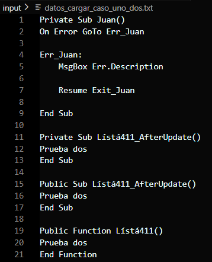
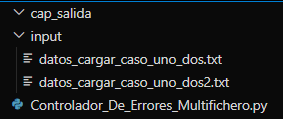
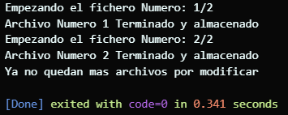
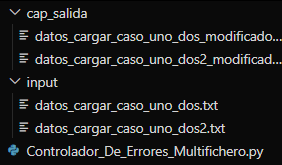
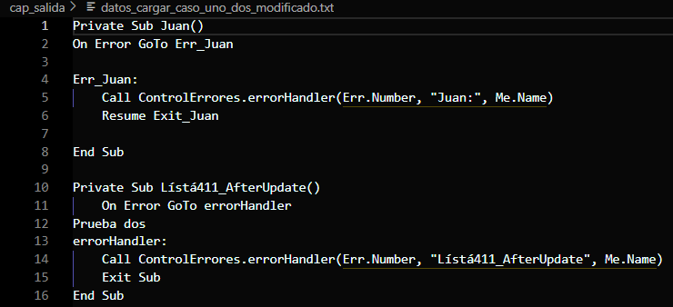

Modifica los ficheros con los formularios VBA, orientado a Access, implementado un control de errores, para cuando hayan errores diga donde esta fallando, facilitando la solución de fallos en las funcionalidades.

 No es necesario tener la carpeta "cap_salida", ya que cuando se ejecute, se creara cuando al los fichero modificado.

 Se generan los nuevos archivos modificados, en la otra carpeta.
 Se recicla el control de errores viejo, pero llamando al nuevo metodo que se encargara, y en caso de no tenen ninguno, se aplicara el nuevo.